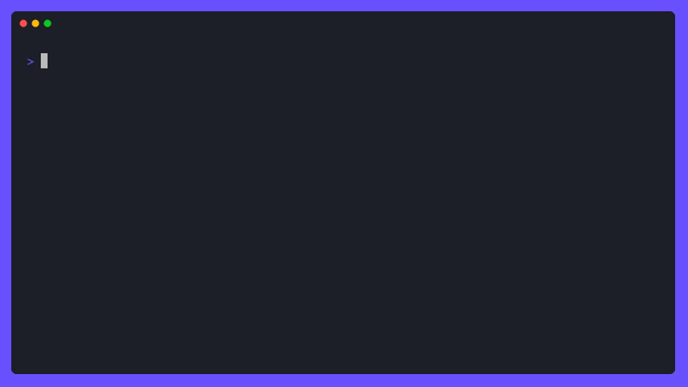

kaydet
Terminal note-taking for developers. Never lose a solution twice.



Zero friction
One command from your terminal. No app windows, no context switching, no loading screens.
Plain text ownership
Daily .txt files you can grep, version with git, sync however you like. No lock-in.
Queryable database
SQLite FTS5 with full-text search, structured metadata, and numeric comparisons.
AI-native
Built-in MCP server. Your AI can search years of your notes in seconds.
Structured metadata
Key:value syntax with comparisons like time:>2, ranges, and sum aggregation.
Todo management
Built-in --todo and --done commands. Track tasks without leaving the terminal.
Quick Start
# Capture a note
$ kaydet "Fixed auth race condition #dev commit:a3f89d"
# Search by tag or metadata
$ kaydet --filter "#dev"
$ kaydet --filter "time:>2"
# Track todos
$ kaydet --todo "Review PR #work priority:high"
$ kaydet --done 42
# Structured metadata with math
$ kaydet --filter "#expense" --sum